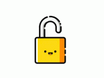

關於我
我叫做吳明翰，個性屬於外向，常是團隊中的開心果，擅長人之間的交際，喜歡利用空閒時間瀏覽心理學的相關書籍、也會適當的運動培養自身的心境。
思維清晰，具有邏輯思考能力，對於細節的部分會進行自我的要求，樂於勇於挑戰。對待工作認真、負責很願意在團隊與公司中付出努力及貢獻。
恩師慈訓
雖然最終的結果非常重要，但在過程中不斷尋找答案的過程，才是主要累積經驗及學習的關鍵。因此我會保持這個信念，繼續讓自己努力的學習新事物。
專長
1. 程式語言：Python、Java、C++
2. 統計軟體：SPSS、SmartPls
3. 擅長工具：Word、Excel、PowerPoint
4. 作業系統：Windows 10、Mac OS、MySQL
【關於我 - 沒嘗試前不要說自己做不到】
出生於一個家境小康的家庭。
父親在環保署擔任司機一職，母親任職於上市公司課長一職，家中還有一位姊姊，我則是為家中最小的一員。
從小父母的教育較為嚴苛，但小時的我仍然不聽勸告，在學業方面始終沒有亮眼成績。
家中排行老二的我，堅持要以自己的方式去踏在人生的道路。寧可撞的頭破血流也要探索出自己的學習方式。
國小成績還有維持前幾名的我，也參與了許多的社團活動，讓自己成為一個能靜能動的人。
國中反倒是體會到了人外有人，在歷經許多課業挫折時，我一度快要放棄了自己。我遇到了一個啟蒙導師，告誡著我還有與我分享世界之大，不要因為這點挫折而放棄。
國小國中都在家鄉附近就讀，高職也不例外 !
而我在高職時期選擇就讀資訊科，不為了別的，只為了可以想出破解被鎖起來的電腦。
或許這只是一個微小的種子，但就因為這顆種子，我選擇在資訊這個領域越走越遠。
在高職時期，我也被導師指派擔任班長一職，帶領著班級奪到了許多亮眼的稱號。也讓我體會到如何在人與人之間達到平和，以及溝通的方式。
【大學】
我畢業於崑山科技大學，資訊管理系。
在大學期間我學習偏向管理一職，因此也利用課外之餘去飯店業打工。
利用半工半讀的方式，讓我學會在這忙碌的生活中，調適課業與職場間的平衡。
工讀期間也因為工作態度良好，因此放手讓我管理現場，調度場內人員、人手的安排是我後期工讀主要的工作。
而這些寶貴的管理經驗，培養了我面對危機時能夠臨機應變、獨立思考的能力。
大四專題的撰寫，主題與自家產業相關，因此主要負責資料的收集、匯整與業主的洽談。
將收集到的資訊統整後匯報給組員進行重點的擷取。
構思影片的拍攝流程與協助團隊處理相關專業知識。
【研究所】
畢業於高雄科技大學商務資訊應用系研究所。
碩一時期，接觸到機器學習專論(Python)以及高等演算法，讓我深入了解時間複雜度和空間維度的分析。
透過使用Scikit-Learn等機器學習框架建構模型與預測。
課後之餘也會透過網路學習精進自身程式語言的能力。
碩二下時期，專心撰寫碩士論文，以及鑽研感興趣的領域，投資虛擬貨幣市場。
利用夜間的時期，與朋友報名課堂學習交易方法。
透過學習Smart Money Concept (SMC)，學習金融領域。
了解市場的交易機制以及讓自身多了解市場的反應。
在這個環境中，讓我參與了大大小小的聚會，了解時刻精進自身的能力還有收集消息的能力。
【興趣嘗試】
透過使用Solidity編寫智能合約，主要撰寫EVM體系的智能合約，以及參考Github上面前輩的案例進行修改參數。
將智能合約部署於區塊鏈後，驗證合約之源代碼公布至區塊鏈瀏覽器。
遇到的問題：
合約安全的部分：練習這個初步為合約部屬練習，資安問題存在滿大的漏洞。
合約代幣顯示錯誤：初步判定與網站調用合約時計算的方式不同。
【第一份工作-緯穎科技維修技術員】
於2020年07月到2022年9月。
1.操作X-RAY游離輻射機台，檢查產品的點位是否為無效焊接。
2.嘗試操作BGA機台、維修、修改內部參數，協助掌控新機台的設定。
3.在日常工作中尋找如何使更換IC的良率提升降低團隊中WIP。
4.協助工程師製作相對應的載具以及鋼片與製作SOP的流程以及相關手法的製作。
5.並在面對客戶稽核時，應答出相關正確資訊。
【學生工讀 - 麗新大酒店 - 領班】
於2018年01月到2019年10月。
1.掌控內外場的人力調度。
2.排除現場突發狀況。